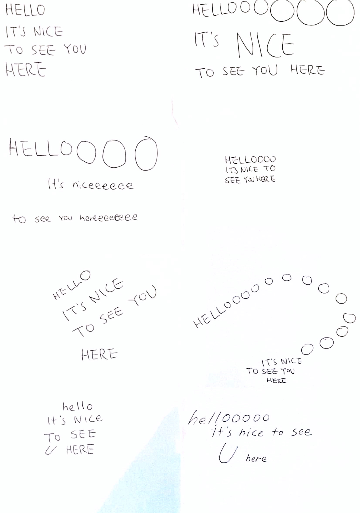
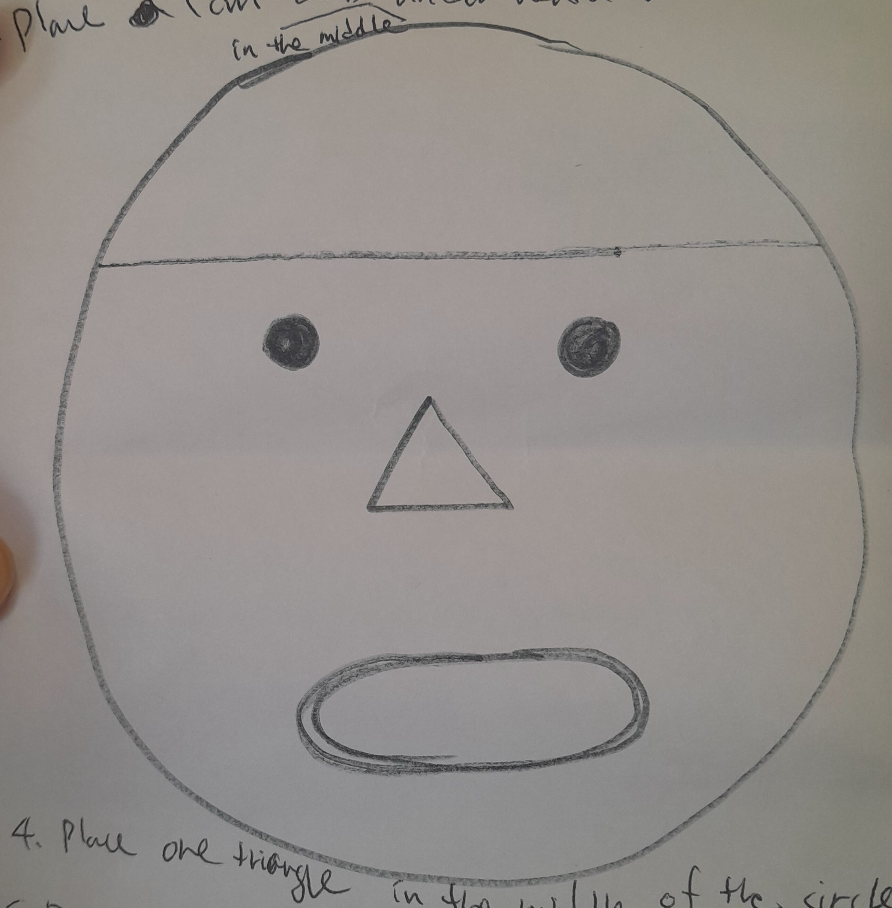

Basic HTML & CSS structure
This was the first coding lesson I learned in class. It was a bit hard to follow since I’m slower at picking things up, which made me feel overwhelmed at times. Seeing the result on the screen was, however, rewarding in its own way.
<!DOCTYPE html>
<html lang="en">
<head>
<title>codewords</title>
<style>
html, body {
height: 100%;
width: 100%;
margin: 0;
border: none;
padding: 0;
}
div {
position: absolute;
width: 100%;
height: 100%;
text-align: center;
z-index:1;
align-items: center;
}
body {
text-align: center;
background-image: url(images/mouse.jpg);
background-size: 200px;
background-color: #ff0;
font-family: Helvetica, Arial, sans-serif;
color: white;
}
h1 {
font-size: 10vh;
line-height: 1;
color: #f00;
transform: scale(1, 10);
margin: 0;
z-index:0;
}
</style>
</head>
<body>
<div align="center">
<img src="images/mouse.jpg" width="400"/>
<h1>hello world!</h1>
<p>Be present</p>
</div>
</body>
</html>
Brainstorming about words on the screen using the crazy8 method and then writing code were new experiences. It felt like learning a foreign language and its system. Based on my sketch, I had to communicate with the machine specifically about what to do. I didn't know anything about HTML and CSS, and I got fundamental information here. If you want to know what all the HTML tags mean, click here.

<!DOCTYPE html>
<html lang="en">
<head>
<meta charset="UTF-8">
<meta name="viewport" content="width=device-width,
initial-scale=1.0">
<title>Hello Snippet</title>
<style>
body {
font-family: Helvetica, Arial, sans-serif;
}
</style>
</head>
<body>
<h1><span style="font-size: 110px;">HELL</span>
<span style="font-size: 150px;">O</span>
<span style="font-size: 180px;">O</span>
<span style="font-size: 220px;">O</span>
<span style="font-size: 260px;">O</span>
<span style="font-size: 300px;">O</span>
<span style="font-size: 350px;">O</span></h1>
<h2>
<span style="font-size: 110px;">IT'S NICE</span>
</h2>
<h2><span style="font-size: 40px;">TO SEE YOU HERE</span></h2>
</body>
</html>
In class, we explored concrete poetry. I hadn’t heard of it before and wanted to find examples in South Korea but couldn’t. Some poems we explored were hard to understand the meaning behind. However, I found “Blues” by bpNichol (the image below) interesting. The reversal of the word “love” was clever, and the repetition of “e” created sound. Also, I saw each word can be seen as a person. Maybe it’s just me, but everyone probably finds their own meaning in it.
We selected texts from “OK texts from metadata” and made concrete poetry-inspired sketches. My text was “We cannot process your information. Your information is corrupt and needs cleansing. Erase brain? OK.” I illustrated a funnel shape to suggest information not processing. To highlight the word “Corrupt,” I used “transform: rotate();” to make it look chaotic and abnormal.
For details on how rotate() works in CSS, check out this resource.
<!DOCTYPE html>
<html>
<style>
body {
justify-content: center;
align-items: center;
font-family: Helvetica, Arial, sans-serif;
text-align: center;
}
.long-text {
font-size: 15px;
margin-top: 20px;
text-align: right;
}
.rotated-text {
display: inline-block;
transform: rotate(-20deg);
transform-origin: center;
font-size: 160px;
}
</style>
<body>
<h1><span style="font-size: 80px;">YOUR INFORMATION</span></h1>
<h1><span style="font-size: 40px;">IS</span></h1>
<h1><span class="rotated-text">CORRUPT</span> AND</h1>
<h1><span style="font-size: 40px;">NEEDS CLEANSING</span></h1>
<p>W</p>
<p>E</p>
<br>
<p>C</p>
<p>A</p>
<p>N</p>
<p>N</p>
<p>O</p>
<p>T</p>
<br>
<p>P</p>
<p>R</p>
<p>O</p>
<p>C</p>
<p>E</p>
<p>S</p>
<p>S</p>
<br>
<p>Y</p>
<p>O</p>
<p>U</p>
<p>R</p>
<br>
<p>I</p>
<p>N</p>
<p>F</p>
<p>O</p>
<p>R</p>
<p>M</p>
<p>A</p>
<p>T</p>
<p>I</p>
<p>O</p>
<p>N</p>
<div class="long-text">
<span>ERASE BRAIN</span>
<span >OK</span>
</div>
</body>
</html>
p5.js Shapes
We covered some basics of p5.js, learning how to create shapes, position them on the screen, and add colours. In p5.js, things are drawn in the order I write them. New shapes or elements go on top of the ones before. So, if something wants to appear in front, it needs to be drawn last. In this code, push() and pop() are used to save and restore the current drawing state. This way, transformations (like rotation, translation, and scaling) are applied to specific elements without affecting the rest. Without push() and pop(), things like the eyes, nose, and mouth would end up at odd angles because the rotated state would affect everything.

function setup() {
createCanvas(windowWidth, windowHeight);
background(135, 20, 235);
}
function draw() {
// hair
fill(53, 33, 0);
ellipse(width / 2, 0.59 * height, 450, 500);
ellipse(width / 3.5, 0.8 * height, 160, 150);
// body
fill(251, 198, 207);
square(width / 4, 0.75 * height, 500, 180);
// face
fill(255, 252, 180);
circle(width / 2, 0.6 * height, 360, 400);
// bangs (first one)
push();
fill(53, 33, 0);
rotate(-0.71 * QUARTER_PI);
ellipse(0.29 * width, 0.73 * height, 170, 250);
pop();
// bangs (second one)
push(); fill(53, 33, 0);
rotate(QUARTER_PI);
ellipse(0.57 * width, 0.01 * height, 170, 250);
pop();
// eyes
fill(53, 33, 0);
circle(0.42 * width, height / 1.7, 20);
circle(0.57 * width, height / 1.7, 20);
// nose
fill(251, 198, 207);
triangle(width / 1.0, 0.65 * height, width / 2.1,
0.65 * height, width / 2, 0.6 * height);
// mouth
fill(231, 84, 128);
ellipse(width / 2, 0.71 * height, 100, 20);
}
I created shapes that rotate using a variable called angle. As the frameCount increases, the angle also increases, resulting in a continuous rotation of the shapes. By multiplying frameCount by a larger value, I can make the rotation faster.
function setup() {
createCanvas(400,400);
}
function draw() {
background(200);
let angle = frameCount * 0.05;
rotate(angle);
fill (0,255,0);
rect(100, 50, 80, 40);
fill(255, 0, 0);
circle(60,60,60);
fill(0, 0, 255);
triangle(90, 225, 174, 60, 258,225);
}
Mouse Events
The mousePressed() function in this code increases the SIZE by 10 each time the mouse is clicked. By increasing the value to 30 instead of 10, the effect would be even more noticeable.
var SIZE;
var xPos, Ypos;
function setup() {
createCanvas(windowWidth, windowHeight);
background(0);
textAlign(CENTER);
SIZE=80;
xPos=width/2;
yPos=height/2;
frameRate(1);
}
function draw() {
yPos=random(height);
xPos=random(width);
fill(255, 255, 0);
textSize(SIZE);
text('HELLO WORLD', xPos, yPos);
}
function mousePressed() {
SIZE+=10;
}
This code features several interesting effects. The text is positioned randomly with yPos=random(height); and xPos=random(width);, and it rotates based on the mouse’s horizontal position with rotate (mouseX);. The translate(xPos, yPos); is used to set the new position of the text. "translate" is often used with rotate or scale. Additionally, a line is drawn following the mouse movements. The \n character starts a new line of text.
var SIZE;
var xPos, Ypos;
function setup() {
createCanvas(windowWidth, windowHeight);
background(0);
textAlign(CENTER, CENTER);
SIZE=80;
xPos=width/2;
yPos=height/2;
frameRate(5);
angleMode(DEGREES);
}
function draw() {
background(0, 25);
yPos=random(height);
xPos=random(width);
fill(255, 0, 0);
textSize(SIZE);
push();
translate(xPos, yPos);
rotate(mouseX);
text('OMG\nno thank you', -width/4, -height/4, width/2,
height/2 );
pop();
stroke(255, 0,0);
strokeWeight(5);
line(mouseX, mouseY, pmouseX, pmouseY);
}
In this code, the text rotates according to the mouseX position. The line pic. filter(BLUR, 3); adds a blur effect to the image. When the mouse is pressed, the text colour changes to white using an if-else statement. If the mouse button is pressed mouseIsPressed, it changes to white. If the mouse is not pressed (else), it changes to red.
function setup() {
createCanvas(windowWidth, windowHeight);
background(0);
textAlign(CENTER, CENTER);
SIZE=80;
xPos=width/2;
yPos=height/2;
frameRate(5);
angleMode(DEGREES);
}
function draw() {
background(0);
//yPos=random(height);
//xPos=random(width);
fill(255, 0, 0);
if (mouseIsPressed===true) {
fill(255);
} else {
fill(255,0,0);
}
textSize(SIZE);
push();
translate(xPos, yPos);
noStroke();
//rotate(QUARTER_PI);
rotate(mouseX);
text('HELLO WORLD\nbye world', -width/4, -height/4,
width/2, height/2 );
pop();
stroke(255, 0,0);
strokeWeight(5);
line(mouseX, mouseY, pmouseX, pmouseY);
pic.filter (BLUR,6);
image(pic, width/2-300, height/2);
}
var SIZE;
var xPos, Ypos;
function preload(){
pic=loadImage('data/lazy.jpg');
}
This code shows how to interact when the mouse is dragged. When the mouse is dragged (mouseDragged()), it increments the value by 5, and if the value hits 255, it goes back to 0. Basically, it changes the green shade of the square when the mouse is dragged. If the mouse is not pressed (else), it changes to red. Check out more mouse functions here.
let value = 0;
function setup() {
createCanvas(windowWidth, windowHeight);
}
function draw() {
background(255);
fill(0, value, 0);// Blue shade
square(25, 25, 400);
}
function mouseDragged() {
value += 5;
if (value > 255) {
value = 0;
}
}
Custom Cursor
The mousePressed() function in this code increases the SIZE by 10 each time the mouse is clicked. By increasing the value to 30 instead of 10, the effect would be even more noticeable.
var pic;
function preload(){
pic = loadImage("data/lazy.jpg");
}
function setup() {
createCanvas(windowWidth, windowHeight);
background("blue");
imageMode(CENTER, CENTER);
}
function draw(){
image(pic, mouseX, mouseY, 100, 100);
}
Radio Button
This code demonstrates how to create a radio button using the createRadio() function. While the radio button is stored in the variable named myRadio, you can choose any name for this variable. The line button = createButton('click me'); creates a button labeled "click me."
Additionally, the statement let buttons = []; creates an empty array to hold multiple buttons. Then, with a for loop, the program generates 100 "click me" buttons, each randomly placed across the screen, making for a fun interaction.
var myRadio;
function setup() {
createCanvas(windowWidth, windowHeight);
background("blue");
imageMode(CENTER, CENTER);
// Create a radio button element and place it
myRadio = createRadio();
myRadio.position(width/4, height/4);
myRadio.size(100);
// Add a few color options.
myRadio.option('red');
myRadio.option('yellow');
myRadio.option('blue');
// Choose a default option.
myRadio.selected('yellow');
let div = createDiv <h3>HELLO WORLD</h3>
div.position(width/2, height/2)
//image(pic, mouseX, mouseY, 100, 100);
button = createButton('click me');
button.position(width/2, height/2);
let buttons=[];
for (let i=0; i<100;i++){
buttons[i]=createButton ('click me');
buttons[i].position(random(width), random(height));
}
}
function draw() {
let g = myRadio.value();
background(g)
}
Play a Sound
This code demonstrates how to add and play a sound. It uses loadSound() to load an audio file from the data folder. In the setup() function, getAudioContext().suspend(); is called to prevent the sound from playing automatically.
In the mousePressed() function, when you click the mouse, the program checks if the audio is paused. If it is, the sound will play. The keyTyped() function is triggered whenever a key is pressed. If the space bar is pressed (using if (key === " ")), the sound stops. For any other key, the sound starts playing again, giving users control over the audio.
The if statements are crucial because they allow the program to make decisions based on user actions. In this code, checking if the space bar is pressed determines whether the sound stops or plays.
var song;
function preload(){
song= loadSound("data/lion-roar-6011.mp3");
}
function setup() {
createCanvas(windowWidth, windowHeight);
background(255, 255, 0);
getAudioContext().suspend();
}
function draw() {
background(255, 255, 0);
circle(mouseX, mouseY, 60);
}
function mousePressed() {
if (getAudioContext().state !== 'running') {
getAudioContext().resume();
song.play();
song.loop();
}
}
function keyTyped(){
if (key === " "){ //space bar
song.stop();
}
else {//any other key
song.play();
}
}
Animating Text (wiggly letters)
This code creates fun, wiggly letters on the screen and has many things to mention regarding new methods and functions in this code. The loop for (var i = 0; i < wigglyLetters.length; i++) goes through each letter in the wigglyLetters array. Without this loop, only one letter would show at a time. The giggle() method makes the letters wiggle by changing their size randomly, which can increase or decrease by up to 20 pixels.
When you click the mouse, the mousePressed() function generates a random number between 65 and 159 (with 160 not included). The char(rand) function turns that number into a character, like 'A' for 65 and 'B' for 66, using the ASCII table. The line wigglyLetters.push(new Wiggle (mouseX, mouseY, size, letter, speed)); creates a new wiggle object at the mouse's position with the random letter, size, and speed. The .push() method adds this new Wiggle object to the wigglyLetters array. So, every time you click the mouse, a new letter is created and added to the array, while the existing letters keep showing and wiggling.
A class is like a template that helps us create many similar objects without rewriting code. Each letter created with new Wiggle(...) is an instance of the Wiggle class. Each instance can have its own unique values, like position and size. The constructor sets up these starting values for each new wiggly letter. The display() method is what actually shows the letters on the screen. The line textSize(this.textSize) makes the letters display in their random sizes; without it, they would just show in the default size. The text(this.letter, this.x, this.y) line draws the letter on the canvas. If this line were missing, no letters would appear.
Finally, the windowResized() function keeps the canvas size adjustable. This means that if you change the window size, the canvas will resize to fit accordingly. I found it exciting to see how each click generates a new, animated letter. The combination of looping, randomization, and classes creates a dynamic and engaging visual.
var wigglyLetters=[];
var size=32;
var speed=1;
var letter, rand, xposition, yposition;
function setup() {
createCanvas(windowWidth, windowHeight);
background(0);
textSize(32);
textFont("Times");
}
function draw() {
background(0);
fill(255,255,0);
noStroke();
for(var i=0; i